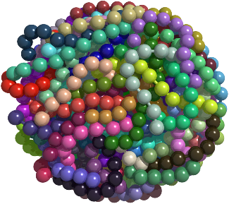

Granular materials
We have been investigating situations where the mechanical properties of such granular packings can be tuned and controlled for different applications by modifying grain connectivity or boundary conditions.
Entangled granular materials
 |
Applications to Robotics
 A novel application of granular materials is a universal robotic gripper. The traditional approach to universal robotic grippers has been to approximate a hand with metal digits and joints. However, this requires sensors to characterize the target object, computation to determine the best approach to the object, and a multiple-actuator control system to control each of the joints. In collaboration with iRobot Corporation and Hod Lipson's group at Cornell, we have developed a new approach using a bag of jammable grains attached to an arm. When pushed onto a target object, the grains in the bag flow around and form to the shape of the target. When the bag is vacuumed out to jam the grains into a solid they squeeze and hold the target. This gripper can handle a wide variety of objects with different weights, shapes, and fragility with a single control mode eliminating the need for complicated control systems. We showed that the holding force comes from a combination of friction, suction, and interlocking, and how this force is determined by the properties of the granular material [Brown et al., PNAS (2010),(supplementary material)]. This gripper can also release objects with precision control using positive pressure [Amend et al., IEEE Trans. Robotics (2012). Videos, images, and links to news reports about the jamming gripper.
A novel application of granular materials is a universal robotic gripper. The traditional approach to universal robotic grippers has been to approximate a hand with metal digits and joints. However, this requires sensors to characterize the target object, computation to determine the best approach to the object, and a multiple-actuator control system to control each of the joints. In collaboration with iRobot Corporation and Hod Lipson's group at Cornell, we have developed a new approach using a bag of jammable grains attached to an arm. When pushed onto a target object, the grains in the bag flow around and form to the shape of the target. When the bag is vacuumed out to jam the grains into a solid they squeeze and hold the target. This gripper can handle a wide variety of objects with different weights, shapes, and fragility with a single control mode eliminating the need for complicated control systems. We showed that the holding force comes from a combination of friction, suction, and interlocking, and how this force is determined by the properties of the granular material [Brown et al., PNAS (2010),(supplementary material)]. This gripper can also release objects with precision control using positive pressure [Amend et al., IEEE Trans. Robotics (2012). Videos, images, and links to news reports about the jamming gripper.
We also used granular materials for robotic locomotion in collaboration with iRobot corporation. We built a proof-of-principle robot using a vacuum-controlled jamming transition to modulate the work of an expanding actuator which allows the robot to morph into different shapes and move around [Steltz et al., IEEE Intelligent Robots & Systems (2009)]. Video.